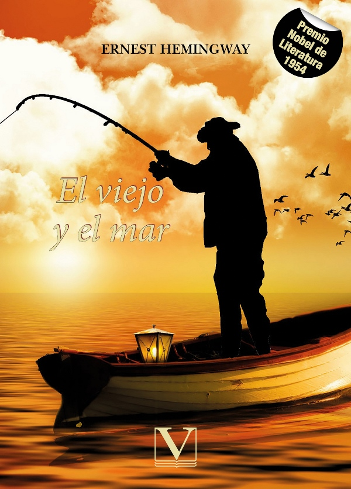

Nombre:El viejo y el mar
Año de publicacion:1952
Autor: Ernest Hemingway Editorial: Charles Scribner's Sons
Reseña: Esta novela, que fue una de las razones por las que le valió el Nobel de Literatura en 1953, no refleja otra cosa que una historia “aparentemente” sencilla: un viejo y su obsesión por un pez que no se deja atrapar. Esa es la magia de “El viejo y el mar”, una fábula asombrosa cuyas moralejas (más de una), se esconden bajo las líneas, entre los diálogos que Santiago sostiene consigo mismo los tres días con sus noches que pasa en altamar, cazando su presa que no sería otra cosa más que el reconocimiento de que aún sabe pescar, de que aún sabe vivir.
Calificacion: 84%